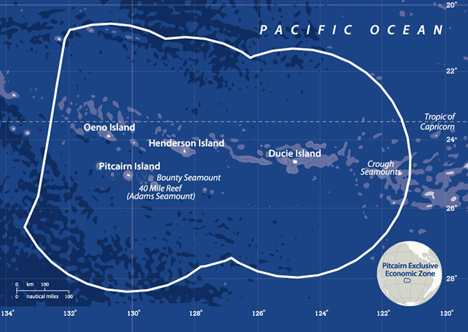

Geography of Pitcairn Islands
Pitcairn Island, more than 2,200 km southeast of Tahiti, sits alone between Peru and New Zealand at 25° south latitude and 130° west longitude. Its nearest inhabited neighbor is Mangareva, a small island in French Polynesia 490 km to the northwest. Easter Island lies 1,900 km to the east.
A high volcanic island, Pitcairn reaches 347 meters at the Pawala Ridge and is bounded by rocks and high cliffs on all sides. There's no coral reef, and breakers roll right in to the shore. The island is only 4.5 square km, almost half of which is fertile ground and well suited for human habitation.